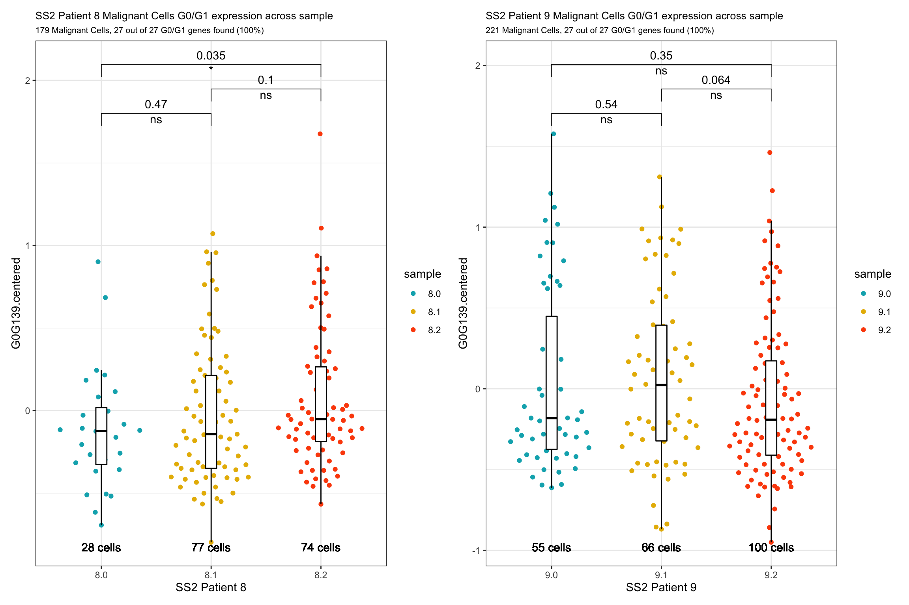
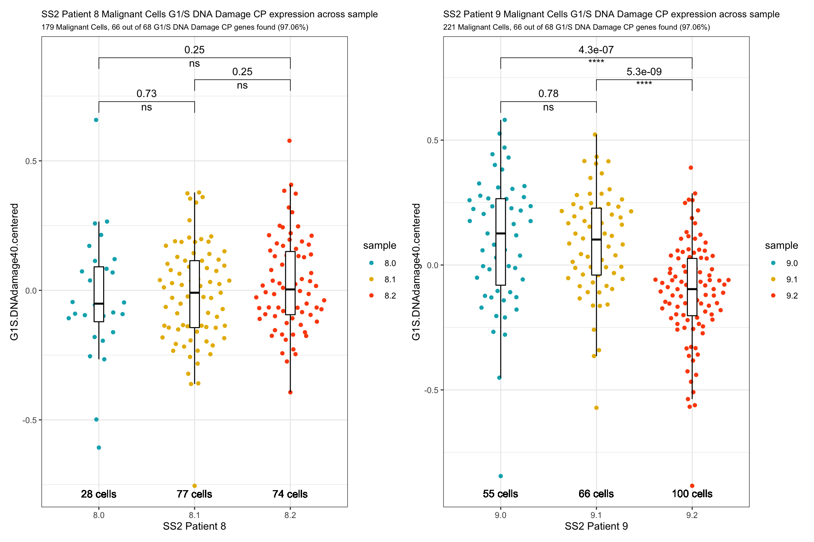
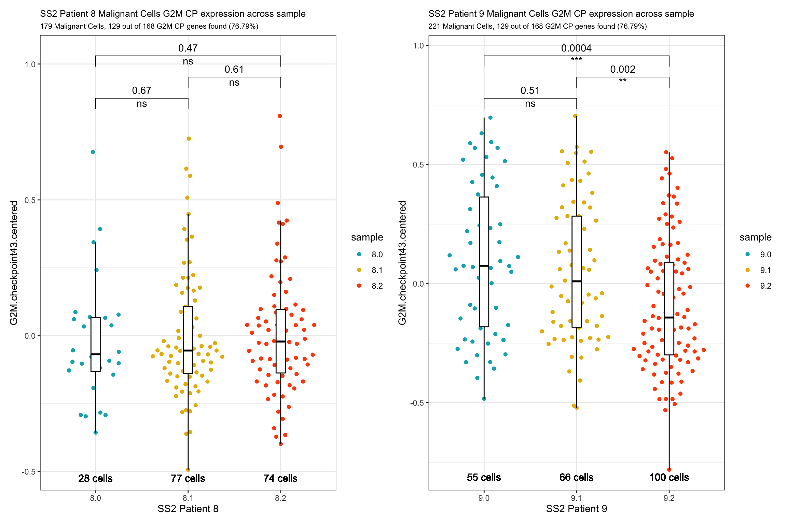
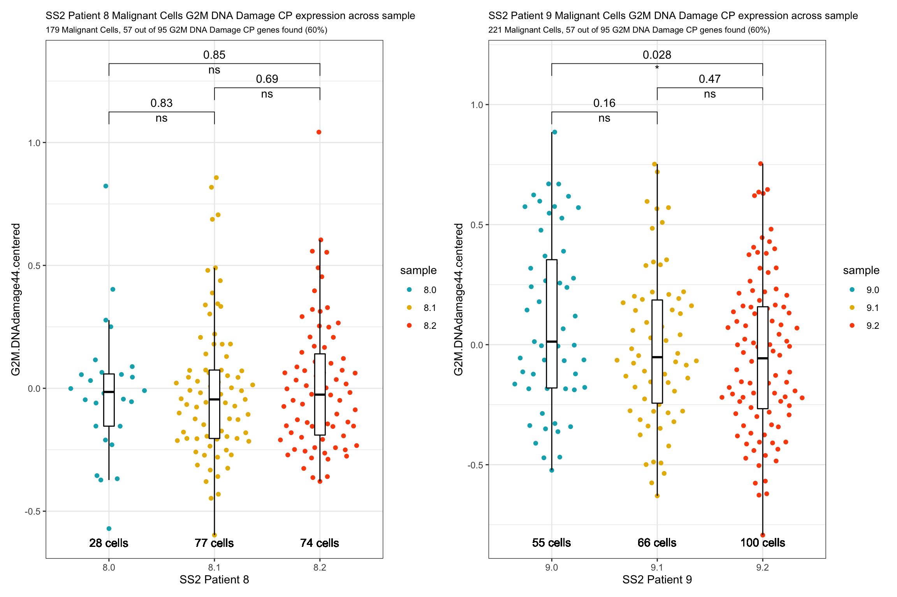
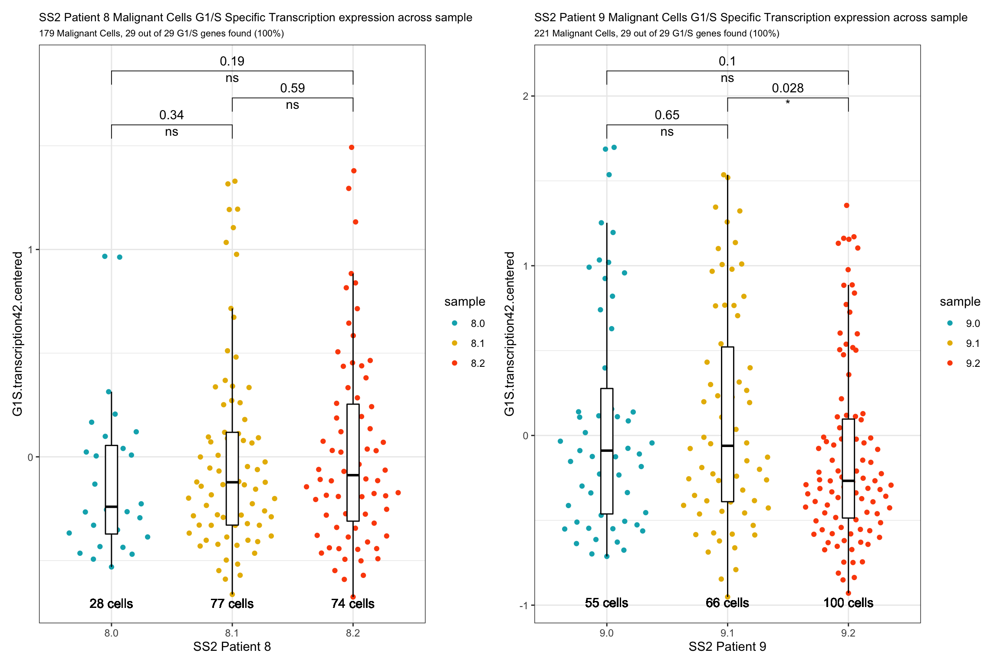
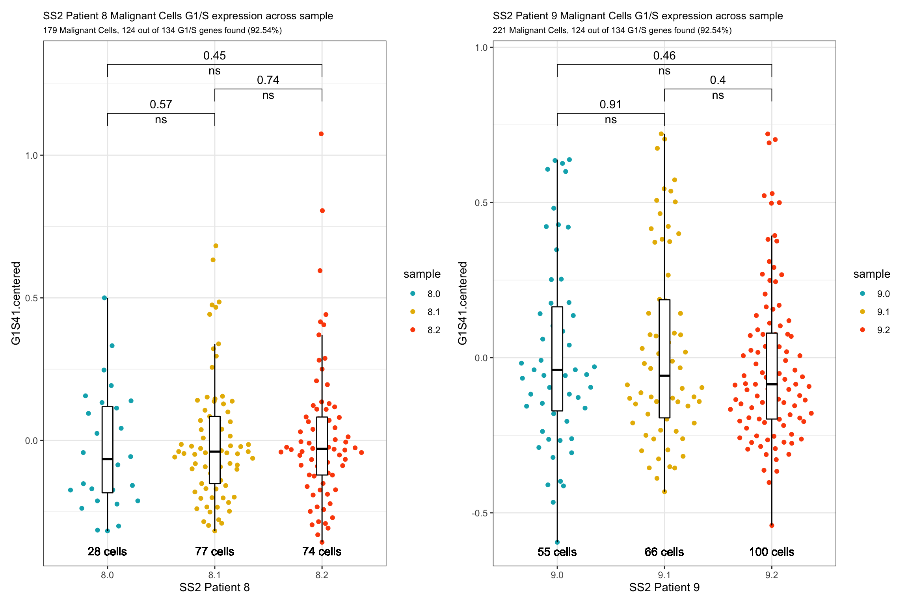
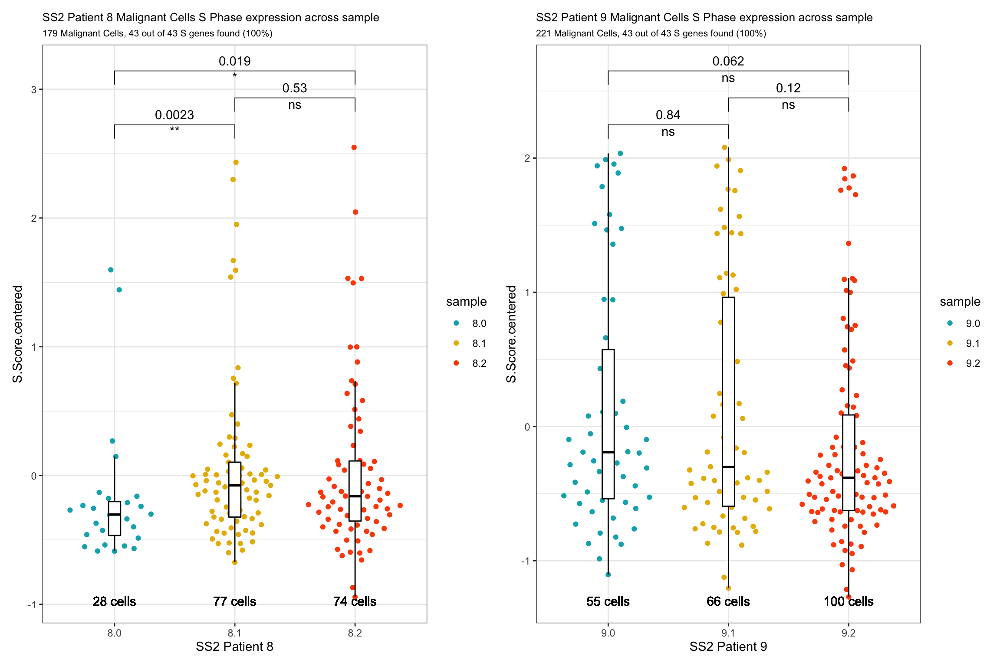
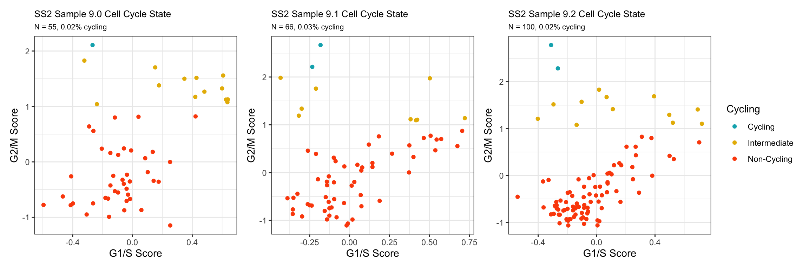

Last updated: 2020-08-12
Checks: 7 0
Knit directory: jesslyn_ovca/analysis/
This reproducible R Markdown analysis was created with workflowr (version 1.6.2). The Checks tab describes the reproducibility checks that were applied when the results were created. The Past versions tab lists the development history.
Great! Since the R Markdown file has been committed to the Git repository, you know the exact version of the code that produced these results.
Great job! The global environment was empty. Objects defined in the global environment can affect the analysis in your R Markdown file in unknown ways. For reproduciblity it’s best to always run the code in an empty environment.
The command set.seed(20200713) was run prior to running the code in the R Markdown file. Setting a seed ensures that any results that rely on randomness, e.g. subsampling or permutations, are reproducible.
Great job! Recording the operating system, R version, and package versions is critical for reproducibility.
Nice! There were no cached chunks for this analysis, so you can be confident that you successfully produced the results during this run.
Great job! Using relative paths to the files within your workflowr project makes it easier to run your code on other machines.
Great! You are using Git for version control. Tracking code development and connecting the code version to the results is critical for reproducibility.
The results in this page were generated with repository version b5bbe6d. See the Past versions tab to see a history of the changes made to the R Markdown and HTML files.
Note that you need to be careful to ensure that all relevant files for the analysis have been committed to Git prior to generating the results (you can use wflow_publish or wflow_git_commit). workflowr only checks the R Markdown file, but you know if there are other scripts or data files that it depends on. Below is the status of the Git repository when the results were generated:
Ignored files:
Ignored: .DS_Store
Ignored: .Rhistory
Ignored: .Rproj.user/
Ignored: analysis/.DS_Store
Ignored: code/.DS_Store
Ignored: data/.DS_Store
Ignored: data/HTAPP/
Ignored: data/Izar_2020/
Ignored: data/gene_lists/.DS_Store
Ignored: data/gene_lists/cellcycle/.DS_Store
Ignored: data/gene_lists/extra/.DS_Store
Ignored: jesslyn_plots/
Ignored: mike_plots/
Ignored: old/.DS_Store
Ignored: old/edited/.DS_Store
Ignored: renv/.DS_Store
Ignored: renv/library/
Ignored: renv/python/
Ignored: renv/staging/
Ignored: vignettes/
Note that any generated files, e.g. HTML, png, CSS, etc., are not included in this status report because it is ok for generated content to have uncommitted changes.
These are the previous versions of the repository in which changes were made to the R Markdown (analysis/02.2_Izar2020_SS2_CellCycleAnalysis.Rmd) and HTML (docs/02.2_Izar2020_SS2_CellCycleAnalysis.html) files. If you’ve configured a remote Git repository (see ?wflow_git_remote), click on the hyperlinks in the table below to view the files as they were in that past version.
| File | Version | Author | Date | Message |
|---|---|---|---|---|
| html | 84edf85 | jgoh2 | 2020-08-12 | Build site. |
| Rmd | d504c59 | jgoh2 | 2020-08-12 | workflowr::wflow_publish(files = files) |
| html | a3ddf54 | jgoh2 | 2020-08-07 | Build site. |
| html | d801a7a | jgoh2 | 2020-08-04 | Build site. |
| Rmd | 6d23590 | jgoh2 | 2020-08-04 | workflowr::wflow_publish(files = files) |
| html | 26f64a3 | jgoh2 | 2020-08-03 | Build site. |
| Rmd | eaa900e | jgoh2 | 2020-08-03 | workflowr::wflow_publish(files = files) |
| html | 2dc1bee | jgoh2 | 2020-07-31 | Build site. |
| Rmd | 284aad4 | jgoh2 | 2020-07-31 | workflowr::wflow_publish(files = files) |
This is the third part of our 5-part analysis of the Izar 2020 SS2 (Cohort 2) data.
We are interested in answering a few questions for our Cell Cycle Analysis:
CELL CYCLE ANALYSIS
# Load packages
source(here::here('packages.R'))
#Read in SS2 RDS object
SS2Malignant = readRDS(file = "data/Izar_2020/jesslyn_SS2Malignant_processed.RDS")
SS2Malignant.8 = readRDS(file = "data/Izar_2020/jesslyn_SS2Malignant8_processed.RDS")
SS2Malignant.9 = readRDS(file = "data/Izar_2020/jesslyn_SS2Malignant9_processed.RDS")
#Read in hallmarks of interest
g0g1.genes <- read_lines("data/gene_lists/cellcycle/G0G1.txt", skip = 2)
g1S.DNAdamage.genes <- read_lines("data/gene_lists/cellcycle/G1SDNAdamage.txt", skip = 2)
g1S.transcription.genes <- read_lines("data/gene_lists/cellcycle/G1Stranscription.txt", skip = 2)
g2m.checkpoint.genes <- read_lines("data/gene_lists/cellcycle/G2Mcheckpoint.txt", skip = 2)
g2m.DNAdamage.genes <- read_lines("data/gene_lists/cellcycle/G2MDNAdamage.txt", skip = 2)
g2m.replicationCP.genes <- read_lines("data/gene_lists/cellcycle/G2MreplicationCheckpoint.txt", skip = 2)
hallmark_names = read_lines("data/gene_lists/hallmarks.txt")
hallmark.list <- vector(mode = "list", length = length(hallmark_names) + 9)
names(hallmark.list) <- c(hallmark_names, "GO.OXPHOS", "KEGG.OXPHOS", "UNUPDATED.OXPHOS",
"UNUPDATED.UPR", "G0G1", "G1S.DNAdamage", "G1S.transcription", "G2M.checkpoint",
"G2M.DNAdamage")
for(hm in hallmark_names){
file <- read_lines(glue("data/gene_lists/hallmarks/{hm}_updated.txt"), skip = 1)
hallmark.list[[hm]] <- file
}
hallmark.list[["GO.OXPHOS"]] <- read_lines("data/gene_lists/extra/GO.OXPHOS.txt", skip = 1)
hallmark.list[["KEGG.OXPHOS"]] <- read_lines("data/gene_lists/extra/KEGG.OXPHOS.txt", skip = 2)
hallmark.list[["UNUPDATED.OXPHOS"]] <- read_lines("data/gene_lists/oxphos.txt", skip =1)
hallmark.list[["UNUPDATED.UPR"]] <- read_lines("data/gene_lists/upr.txt", skip =1)
hallmark.list[["G0G1"]] <- g0g1.genes
hallmark.list[["G1S.DNAdamage"]] <- g1S.DNAdamage.genes
hallmark.list[["G1S.transcription"]] <- g1S.transcription.genes
hallmark.list[["G2M.checkpoint"]] <- g2m.checkpoint.genes
hallmark.list[["G2M.DNAdamage"]] <- g2m.DNAdamage.genes
#center module and cell cycle scores and reassign to the metadata of each Seurat object
hm.names <- names(SS2Malignant@meta.data)[14:58]
for(i in hm.names){
SS2Malignant.hm.centered <- scale(SS2Malignant[[i]], center = TRUE, scale = FALSE)
SS2Malignant <- AddMetaData(SS2Malignant, SS2Malignant.hm.centered, col.name = glue("{i}.centered"))
SS2Malignant8.hm.centered <- scale(SS2Malignant.8[[i]], center = TRUE, scale = FALSE)
SS2Malignant.8 <- AddMetaData(SS2Malignant.8, SS2Malignant8.hm.centered, col.name = glue("{i}.centered"))
SS2Malignant9.hm.centered <- scale(SS2Malignant.9[[i]], center = TRUE, scale = FALSE)
SS2Malignant.9 <- AddMetaData(SS2Malignant.9, SS2Malignant9.hm.centered, col.name = glue("{i}.centered"))
}In our Exploratory Analysis section, we observed that PC_2 captures Cell Cycle Phase, S.Score and G2M scores, as cells in the same phase or have high S or G2M scores are found to be near each other on the PC_2 Axis. However, cells did not seem to cluster by treatment status. We now use a more quantitative approach to investigate the correlation between treatment and cell cycle phase.
#Stacked Bar Plot --------------------------
SS2.names <- c("SS2 Patient 8", "SS2 Patient 9")
SS2s <- c(SS2Malignant.8, SS2Malignant.9)
bar.plots <- vector("list", length = 3)
names(bar.plots) <- SS2.names
for(i in 1:length(SS2s)){
obj = SS2s[[i]]
name = SS2.names[[i]]
numCells = nrow(obj@meta.data)
obj$Phase <- factor(obj$Phase, levels = c("G1", "S", "G2M"))
t = table(obj$Phase, obj$sample) %>%
as.data.frame() %>%
rename(Phase = Var1, Sample = Var2, numCells = Freq)
sum = c()
z = 1
while(z < nrow(t)){
n = t$numCells[z] + t$numCells[z+1] + t$numCells[z+2]
sum = c(sum, rep(n,3))
z = z + 3
}
t <- t %>% mutate(total = sum) %>% mutate(percent = (numCells/total)*100)
p = t %>%
ggplot(aes(x=Sample, y=percent, fill=Phase)) +
geom_bar(stat="identity") +
labs(title = glue("{name} % of Malignant Cells in Each Cell Cycle Phase/ Treatment"), subtitle = glue("{numCells} Malignant Cells"), caption = "Labeled by # cells in each phase per treatment") +
theme(plot.title = element_text(size = 10), plot.subtitle = element_text(size = 10), plot.caption = element_text(size = 8)) +
geom_text(aes(label = paste(numCells, "cells")), position = "stack", hjust = 0.5, vjust = 2, size = 3, color = "white") +
scale_fill_manual(values = c("#00AFBB", "#E7B800", "#FC4E07"))
bar.plots[[i]] <- p
}
bar.plots[["SS2 Patient 8"]] + bar.plots[["SS2 Patient 9"]] + plot_layout(guides= 'collect')
To investigate this further, we build violin plots of cell cycle scores separated by treatment status: - Noncycling Scores - G0 / early G1 - G1/S DNA Damage Checkpoint - G2M Checkpoint - G2M DNA Damage Checkpoint - Cycling Scores - G1/S Specific Transcription - S Score - G2M Score
1) NONCYCLING SCORES
nc <- c("G0G139.centered", "G1S.DNAdamage40.centered", "G2M.checkpoint42.centered", "G2M.DNAdamage43.centered")
nc.names <- c("G0/G1", "G1/S DNA Damage CP", "G2M CP", "G2M DNA Damage CP")
nc.Vln.plots <- vector("list", length = length(nc))
names(nc.Vln.plots) <- nc
for(i in 1:4){
feature <- nc[[i]]
nc.name <- nc.names[[i]]
my_comparisons.8 <- list(
c("8.0", "8.1"),
c("8.1", "8.2"),
c("8.0", "8.2")
)
my_comparisons.9 <- list(
c("9.0", "9.1"),
c("9.1", "9.2"),
c("9.0", "9.2")
)
p8 <- VlnPlot(SS2Malignant.8, features = feature, group.by = "sample", pt.size = 0, c("#00AFBB", "#E7B800", "#FC4E07"), y.max = (max(SS2Malignant.8[[feature]]) + 0.4)) +
labs(title = glue("Patient 8 {nc.name} across samples"), subtitle = paste(nrow(SS2Malignant.8@meta.data), "Malignant Cells")) +
geom_boxplot(width = 0.15, position = position_dodge(0.9), alpha = 0.3, show.legend = F) +
geom_text(label = paste(sum(str_detect(SS2Malignant.8$sample, "[:digit:].0")), "cells"), x = "8.0", y = min(SS2Malignant.8[[feature]]) -0.03) +
geom_text(label = paste(sum(str_detect(SS2Malignant.8$sample, "[:digit:].1")), "cells"), x = glue("8.1"), y = min(SS2Malignant.8[[feature]]) - 0.03) +
geom_text(label = paste(sum(str_detect(SS2Malignant.8$sample, "[:digit:].2")), "cells"), x = glue("8.2"), y = min(SS2Malignant.8[[feature]]) - 0.03) +
stat_compare_means(comparisons = my_comparisons.8, method = "wilcox.test", label = "p.format", step.increase = 0.05) +
stat_compare_means(comparisons = my_comparisons.8, method = "wilcox.test", label = "p.signif", step.increase = 0.05, bracket.size = 0, vjust = 1.8)
p9 <- VlnPlot(SS2Malignant.9, features = feature, group.by = "sample", pt.size = 0, c("#00AFBB", "#E7B800", "#FC4E07"), y.max = (max(SS2Malignant.8[[feature]]) + 0.4)) +
labs(title = glue("Patient 9 {nc.name} across samples"), subtitle = paste(nrow(SS2Malignant.9@meta.data), "Malignant Cells")) +
geom_boxplot(width = 0.15, position = position_dodge(0.9), alpha = 0.3, show.legend = F) +
geom_text(label = paste(sum(str_detect(SS2Malignant.9$sample, "[:digit:].0")), "cells"), x = "9.0", y = min(SS2Malignant.9[[feature]]) -0.03) +
geom_text(label = paste(sum(str_detect(SS2Malignant.9$sample, "[:digit:].1")), "cells"), x = glue("9.1"), y = min(SS2Malignant.9[[feature]]) - 0.03) +
geom_text(label = paste(sum(str_detect(SS2Malignant.9$sample, "[:digit:].2")), "cells"), x = glue("9.2"), y = min(SS2Malignant.9[[feature]]) - 0.03) +
stat_compare_means(comparisons = my_comparisons.9, method = "wilcox.test", label = "p.format", step.increase = 0.05) +
stat_compare_means(comparisons = my_comparisons.9, method = "wilcox.test", label = "p.signif", step.increase = 0.05, bracket.size = 0, vjust = 1.8)
nc.Vln.plots[[feature]] <- p8 + p9 + plot_layout(ncol = 2, nrow =1)
}
nc.Vln.plots[["G0G139.centered"]]
| Version | Author | Date |
|---|---|---|
| 84edf85 | jgoh2 | 2020-08-12 |
nc.Vln.plots[["G1S.DNAdamage40.centered"]]
| Version | Author | Date |
|---|---|---|
| 84edf85 | jgoh2 | 2020-08-12 |
nc.Vln.plots[["G2M.checkpoint42.centered"]]
| Version | Author | Date |
|---|---|---|
| 84edf85 | jgoh2 | 2020-08-12 |
nc.Vln.plots[["G2M.DNAdamage43.centered"]]
| Version | Author | Date |
|---|---|---|
| 84edf85 | jgoh2 | 2020-08-12 |
We hypothesized that samples p.1 will have enriched levels of non/low-cycling genes.
2) CYCLING SCORES
#VlnPlot -------------------------
cc <- c("G1S.transcription41.centered", "S.Score.centered", "G2M.Score.centered")
cc.names <- c("G1/S Specific Transcription", "S Score", "G2M Score")
cc.Vln.plots <- vector("list", length = length(cc))
names(cc.Vln.plots) <- cc
for(i in 1:3){
feature <- cc[[i]]
cc.name <- cc.names[[i]]
my_comparisons.8 <- list(
c("8.0", "8.1"),
c("8.1", "8.2"),
c("8.0", "8.2")
)
my_comparisons.9 <- list(
c("9.0", "9.1"),
c("9.1", "9.2"),
c("9.0", "9.2")
)
p8 <- VlnPlot(SS2Malignant.8, features = feature, group.by = "sample", pt.size = 0, c("#00AFBB", "#E7B800", "#FC4E07"), y.max = (max(SS2Malignant.8[[feature]]) + 0.8)) +
labs(title = glue("Patient 8 {cc.name} across samples"), subtitle = paste(nrow(SS2Malignant.8@meta.data), "Malignant Cells")) +
geom_boxplot(width = 0.15, position = position_dodge(0.9), alpha = 0.3, show.legend = F) +
geom_text(label = paste(sum(str_detect(SS2Malignant.8$sample, "[:digit:].0")), "cells"), x = "8.0", y = min(SS2Malignant.8[[feature]]) -0.03) +
geom_text(label = paste(sum(str_detect(SS2Malignant.8$sample, "[:digit:].1")), "cells"), x = glue("8.1"), y = min(SS2Malignant.8[[feature]]) - 0.03) +
geom_text(label = paste(sum(str_detect(SS2Malignant.8$sample, "[:digit:].2")), "cells"), x = glue("8.2"), y = min(SS2Malignant.8[[feature]]) - 0.03) +
stat_compare_means(comparisons = my_comparisons.8, method = "wilcox.test", label = "p.format", step.increase = 0.05) +
stat_compare_means(comparisons = my_comparisons.8, method = "wilcox.test", label = "p.signif", step.increase = 0.05, bracket.size = 0, vjust = 1.8)
p9 <- VlnPlot(SS2Malignant.9, features = feature, group.by = "sample", pt.size = 0, c("#00AFBB", "#E7B800", "#FC4E07"), y.max = (max(SS2Malignant.8[[feature]]) + 0.8)) +
labs(title = glue("Patient 9 {cc.name} across samples"), subtitle = paste(nrow(SS2Malignant.9@meta.data), "Malignant Cells")) +
geom_boxplot(width = 0.15, position = position_dodge(0.9), alpha = 0.3, show.legend = F) +
geom_text(label = paste(sum(str_detect(SS2Malignant.9$sample, "[:digit:].0")), "cells"), x = "9.0", y = min(SS2Malignant.9[[feature]]) -0.03) +
geom_text(label = paste(sum(str_detect(SS2Malignant.9$sample, "[:digit:].1")), "cells"), x = glue("9.1"), y = min(SS2Malignant.9[[feature]]) - 0.03) +
geom_text(label = paste(sum(str_detect(SS2Malignant.9$sample, "[:digit:].2")), "cells"), x = glue("9.2"), y = min(SS2Malignant.9[[feature]]) - 0.03) +
stat_compare_means(comparisons = my_comparisons.9, method = "wilcox.test", label = "p.format", step.increase = 0.05) +
stat_compare_means(comparisons = my_comparisons.9, method = "wilcox.test", label = "p.signif", step.increase = 0.05, bracket.size = 0, vjust = 1.8)
cc.Vln.plots[[feature]] <- p8 + p9 + plot_layout(ncol = 2, nrow =1)
}
cc.Vln.plots[["G1S.transcription41.centered"]]
cc.Vln.plots[["S.Score.centered"]]
cc.Vln.plots[["G2M.Score.centered"]]
| Version | Author | Date |
|---|---|---|
| 84edf85 | jgoh2 | 2020-08-12 |
Statistically significant results from both NONCYCLING and CYCLYING gene score comparisons show us that 9.1 > 9.2, which is very contradictory.
#Patient 8 ---------------------------------
SS2Malignant8.0 <- subset(SS2Malignant.8, subset = (sample == "8.0"))
SS2Malignant8.1 <- subset(SS2Malignant.8, subset = (sample == "8.1"))
SS2Malignant8.2 <- subset(SS2Malignant.8, subset = (sample == "8.2"))
SS28M.sscore.df <- data.frame(
"p.0vsp.1" = wilcox.test(SS2Malignant8.0$S.Score.centered, SS2Malignant8.1$S.Score.centered)$p.value,
"p.1vsp.2" = wilcox.test(SS2Malignant8.1$S.Score.centered, SS2Malignant8.2$S.Score.centered)$p.value,
"p.0vsp.2" = wilcox.test(SS2Malignant8.0$S.Score.centered, SS2Malignant8.2$S.Score.centered)$p.value
)
SS28M.g2m.df <-
data.frame(
"p.0vsp.1" = wilcox.test(SS2Malignant8.0$G2M.Score.centered, SS2Malignant8.1$G2M.Score.centered)$p.value,
"p.1vsp.2" = wilcox.test(SS2Malignant8.1$G2M.Score.centered, SS2Malignant8.2$G2M.Score.centered)$p.value,
"p.0vsp.2" = wilcox.test(SS2Malignant8.0$G2M.Score.centered, SS2Malignant8.2$G2M.Score.centered)$p.value
)
#Patient 9 ---------------------------------
SS2Malignant9.0 <- subset(SS2Malignant.9, subset = (sample == "9.0"))
SS2Malignant9.1 <- subset(SS2Malignant.9, subset = (sample == "9.1"))
SS2Malignant9.2 <- subset(SS2Malignant.9, subset = (sample == "9.2"))
SS29M.sscore.df <- data.frame(
"p.0vsp.1" = wilcox.test(SS2Malignant9.0$S.Score.centered, SS2Malignant9.1$S.Score.centered)$p.value,
"p.1vsp.2" = wilcox.test(SS2Malignant9.1$S.Score.centered, SS2Malignant9.2$S.Score.centered)$p.value,
"p.0vsp.2" = wilcox.test(SS2Malignant9.0$S.Score.centered, SS2Malignant9.2$S.Score.centered)$p.value
)
SS29M.g2m.df <-
data.frame(
"p.0vsp.1" = wilcox.test(SS2Malignant9.0$G2M.Score.centered, SS2Malignant9.1$G2M.Score.centered)$p.value,
"p.1vsp.2" = wilcox.test(SS2Malignant9.1$G2M.Score.centered, SS2Malignant9.2$G2M.Score.centered)$p.value,
"p.0vsp.2" = wilcox.test(SS2Malignant9.0$G2M.Score.centered, SS2Malignant9.2$G2M.Score.centered)$p.value
)
#combine ------------------------------
sscore.DF <- rbind(SS28M.sscore.df, SS29M.sscore.df)
rownames(sscore.DF) <- c("S.P8", "S.P9")
g2m.DF <- rbind(SS28M.g2m.df, SS29M.g2m.df)
rownames(g2m.DF) <- c("g2m.P8", "g2m.P9")
both.DF <- rbind(sscore.DF, g2m.DF)
DT::datatable(both.DF) %>%
DT::formatSignif(names(both.DF), digits = 2) %>%
DT::formatStyle(names(both.DF), color = DT::styleInterval(0.05, c('red', 'black')))Our results from DE Analysis and Cell Cycle Analysis collectively suggest that OXPHOS and UPR expression weakly correlate with treatment condition, while cell cycle phase does not significantly correlate with treatment. However, considering the idea that cell cycle might influence the expression of signatures, we are now interested in examining whether there is a correlation between the expression of OXPHOS and UPR and cell cycle phase.
hms.centered <- c("GO.OXPHOS35.centered", "UNUPDATED.UPR38.centered")
cc.exp.plot <- vector("list", length = 3)
names(cc.exp.plot) <- SS2.names
patient <- c("8", "9")
for(i in 1:length(SS2s)){
obj = SS2s[[i]]
name = SS2.names[[i]]
numCells = nrow(obj@meta.data)
obj$Phase <- factor(obj$Phase, levels = c("G1", "S", "G2M"))
my_comparisons <- list(
c(glue("G1"), glue("S")),
c(glue("S"), glue("G2M")),
c(glue("G1"), glue("G2M"))
)
if(patient[[i]] == "8"){
p1 <- VlnPlot(obj, features = hms.centered, group.by = "Phase", pt.size = 0, combine = FALSE, cols = c("#00AFBB", "#E7B800", "#FC4E07"), y.max = 1)
}
else{
p1 <- VlnPlot(obj, features = hms.centered, group.by = "Phase", pt.size = 0, combine = FALSE, cols = c("#00AFBB", "#E7B800", "#FC4E07"), y.max = 1.3)
}
p1[[1]] <- p1[[1]] + labs(title = glue("{name} OXPHOS score by Cell Cycle Phase"), subtitle = glue("{numCells} Malignant Cells")) +
geom_boxplot(width = 0.15, position = position_dodge(0.9), alpha = 0.3, show.legend = F)+
geom_text(label = paste(sum(obj$Phase == "G1"), "cells"), x = "G1", y = min(obj$GO.OXPHOS35.centered) -0.03) +
geom_text(label = paste(sum(obj$Phase == "S"), "cells"), x = "S", y = min(obj$GO.OXPHOS35.centered) - 0.03) +
geom_text(label = paste(sum(obj$Phase == "G2M"), "cells"), x = "G2M", y = min(obj$GO.OXPHOS35.centered) - 0.03) +
theme(plot.title = element_text(size = 10)) +
stat_compare_means(comparisons = my_comparisons, method = "wilcox.test", label = "p.format", step.increase = 0.12) +
stat_compare_means(comparisons = my_comparisons, method = "wilcox.test", label = "p.signif", step.increase = 0.12, bracket.size = 0, vjust = 1.8)
p1[[2]] <- p1[[2]] + labs(title = glue("{name} UPR score by Cell Cycle Phase"), subtitle = glue("{numCells} Malignant Cells")) +
theme(plot.title = element_text(size = 10)) +
geom_boxplot(width = 0.15, position = position_dodge(0.9), alpha = 0.3, show.legend = F) +
geom_text(label = paste(sum(obj$Phase == "G1"), "cells"), x = "G1", y = min(obj$UNUPDATED.UPR38.centered) -0.03) +
geom_text(label = paste(sum(obj$Phase == "S"), "cells"), x = "S", y = min(obj$UNUPDATED.UPR38.centered) - 0.03) +
geom_text(label = paste(sum(obj$Phase == "G2M"), "cells"), x = "G2M", y = min(obj$UNUPDATED.UPR38.centered) - 0.03) +
stat_compare_means(comparisons = my_comparisons, method = "wilcox.test", label = "p.format", step.increase = 0.12) +
stat_compare_means(comparisons = my_comparisons, method = "wilcox.test", label = "p.signif", step.increase = 0.12, bracket.size = 0, vjust = 1.8)
p2 <- VlnPlot(obj, features = hms.centered, group.by = "sample", split.by = "Phase", pt.size = 0, combine = FALSE, c("#00AFBB", "#FC4E07", "#E7B800"))
p2[[1]] <- p2[[1]] + labs(title = glue("{name} OXPHOS score by Cell Cycle Phase / Treatment"), subtitle = glue("{numCells} Malignant Cells")) +
geom_boxplot(width = 0.15, position = position_dodge(0.9), alpha = 0.3, show.legend = F) +
theme(plot.title = element_text(size = 10))
p2[[2]] <- p2[[2]] + labs(title = glue("{name} UPR score by Cell Cycle Phase / Treatment"), subtitle = glue("{numCells} Malignant Cells")) +
geom_boxplot(width = 0.15, position = position_dodge(0.9), alpha = 0.3, show.legend = F) +
theme(plot.title = element_text(size = 10))
cc.exp.plot[[i]] <- p1[[1]] + p1[[2]] + p2[[1]]+ p2[[2]] + plot_layout(guides= 'collect')
}
cc.exp.plot[["SS2 Patient 8"]]
cc.exp.plot[["SS2 Patient 9"]]
sessionInfo()R version 4.0.2 (2020-06-22)
Platform: x86_64-apple-darwin17.0 (64-bit)
Running under: macOS Mojave 10.14.6
Matrix products: default
BLAS: /Library/Frameworks/R.framework/Versions/4.0/Resources/lib/libRblas.dylib
LAPACK: /Library/Frameworks/R.framework/Versions/4.0/Resources/lib/libRlapack.dylib
locale:
[1] en_US.UTF-8/en_US.UTF-8/en_US.UTF-8/C/en_US.UTF-8/en_US.UTF-8
attached base packages:
[1] stats graphics grDevices datasets utils methods base
other attached packages:
[1] ggbeeswarm_0.6.0 ggpubr_0.4.0 GGally_2.0.0 gt_0.2.1 reshape2_1.4.4
[6] tidyselect_1.1.0 fgsea_1.14.0 presto_1.0.0 data.table_1.12.8 Rcpp_1.0.5
[11] glue_1.4.1 patchwork_1.0.1 EnhancedVolcano_1.6.0 ggrepel_0.8.2 here_0.1
[16] readxl_1.3.1 forcats_0.5.0 stringr_1.4.0 dplyr_1.0.0 purrr_0.3.4
[21] readr_1.3.1 tidyr_1.1.0 tibble_3.0.3 ggplot2_3.3.2 tidyverse_1.3.0
[26] cowplot_1.0.0 Seurat_3.1.5 BiocManager_1.30.10 renv_0.11.0-4
loaded via a namespace (and not attached):
[1] backports_1.1.8 fastmatch_1.1-0 workflowr_1.6.2 plyr_1.8.6 igraph_1.2.5
[6] lazyeval_0.2.2 splines_4.0.2 crosstalk_1.1.0.1 BiocParallel_1.22.0 listenv_0.8.0
[11] digest_0.6.25 htmltools_0.5.0 fansi_0.4.1 magrittr_1.5 cluster_2.1.0
[16] ROCR_1.0-11 openxlsx_4.1.5 globals_0.12.5 modelr_0.1.8 colorspace_1.4-1
[21] blob_1.2.1 rvest_0.3.5 haven_2.3.1 xfun_0.15 crayon_1.3.4
[26] jsonlite_1.7.0 survival_3.2-3 zoo_1.8-8 ape_5.4 gtable_0.3.0
[31] leiden_0.3.3 car_3.0-8 future.apply_1.6.0 abind_1.4-5 scales_1.1.1
[36] DBI_1.1.0 rstatix_0.6.0 viridisLite_0.3.0 reticulate_1.16 foreign_0.8-80
[41] rsvd_1.0.3 DT_0.14 tsne_0.1-3 htmlwidgets_1.5.1 httr_1.4.1
[46] RColorBrewer_1.1-2 ellipsis_0.3.1 ica_1.0-2 farver_2.0.3 pkgconfig_2.0.3
[51] reshape_0.8.8 uwot_0.1.8 dbplyr_1.4.4 labeling_0.3 rlang_0.4.7
[56] later_1.1.0.1 munsell_0.5.0 cellranger_1.1.0 tools_4.0.2 cli_2.0.2
[61] generics_0.0.2 broom_0.7.0 ggridges_0.5.2 evaluate_0.14 yaml_2.2.1
[66] knitr_1.29 fs_1.4.2 fitdistrplus_1.1-1 zip_2.0.4 RANN_2.6.1
[71] pbapply_1.4-2 future_1.18.0 nlme_3.1-148 whisker_0.4 xml2_1.3.2
[76] compiler_4.0.2 rstudioapi_0.11 beeswarm_0.2.3 plotly_4.9.2.1 curl_4.3
[81] png_0.1-7 ggsignif_0.6.0 reprex_0.3.0 stringi_1.4.6 lattice_0.20-41
[86] Matrix_1.2-18 vctrs_0.3.2 pillar_1.4.6 lifecycle_0.2.0 lmtest_0.9-37
[91] RcppAnnoy_0.0.16 irlba_2.3.3 httpuv_1.5.4 R6_2.4.1 promises_1.1.1
[96] KernSmooth_2.23-17 gridExtra_2.3 rio_0.5.16 vipor_0.4.5 codetools_0.2-16
[101] MASS_7.3-51.6 assertthat_0.2.1 rprojroot_1.3-2 withr_2.2.0 sctransform_0.2.1
[106] parallel_4.0.2 hms_0.5.3 grid_4.0.2 rmarkdown_2.3 carData_3.0-4
[111] Rtsne_0.15 git2r_0.27.1 lubridate_1.7.9